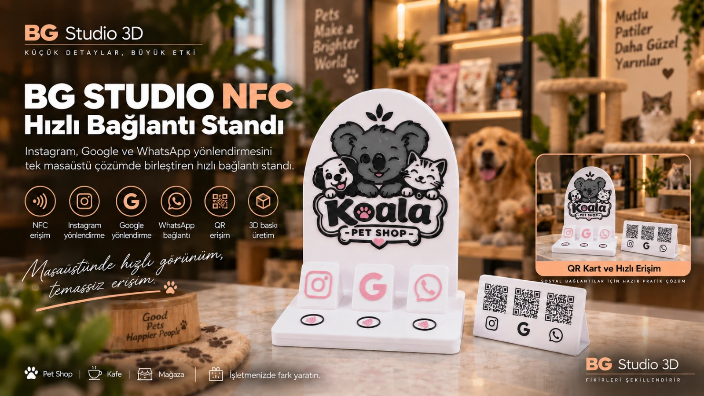

3 NFC / stand
Üç bağımsız erişim noktası işletmenin seçtiği dijital hedeflere bağlanır.
HIZLI BAĞLANTI STANDI
Instagram, Google, WhatsApp, web sitesi veya işletmenin seçtiği farklı bağlantıları 3 NFC ile tek stand üzerinde birleştiren kompakt işletme çözümü.

Üç bağımsız erişim noktası işletmenin seçtiği dijital hedeflere bağlanır.
İstenirse standa 3 QR eklenir. QR bedeli paket plan bedelinden ayrı hesaplanır.
Uygun hedef bağlantıları fiziksel ürünü yeniden üretmeden güncellenebilir.
Stand 3D olarak tasarlanır ve üretilir. Hazır pleksi üzerine etiket uygulaması değildir.
KULLANIM
NASIL ÇALIŞIR
Müşteri NFC’si açık telefonunu standdaki noktaya yaklaştırır. Uygulama gerekmez; bağlantı doğrudan tarayıcıda açılır.
QR seçeneği eklendiyse NFC’si olmayan telefonlar da kameradan okutarak aynı hedefe ulaşır.
Hedef bağlantılar BG Studio NFC panelinden değiştirilir. Instagram hesabı ya da kampanya sayfası değişse bile stand yeniden üretilmez.
KİMLER İÇİN
Hızlı Bağlantı Standı tek noktadan birkaç kanala yönlendirmek isteyen her işletmeye uyar.
Kasa veya masa üzerinde Google yorumu, Instagram ve WhatsApp sipariş hattı tek noktada.
Bankoda duran stand ile müşteriler sosyal medya ve iletişim kanallarına hızlıca geçer. Örnek: Koala Petshop.
Randevu için WhatsApp, çalışmalar için Instagram, memnuniyet için Google yorumu.
Resepsiyonda web sitesi, konum ve iletişim bağlantılarını bir arada sunar.
SIK SORULANLAR
NFC özelliği olan Android telefonlar ve iPhone XS ile sonraki iPhone modelleri. NFC’si kapalı veya olmayan telefonlar için standa QR eklenebilir.
Hayır. Bağlantı telefonun kendi tarayıcısında açılır.
Evet. Standdaki üç hedef panelden güncellenir; fiziksel ürün olduğu gibi kalır.
Evet. BG Studio NFC panelinde her bağlantının kaç kez açıldığı görünür.
2026 FİYAT YAPISI
Menü Tasarımı Hızlı Bağlantı Standı kapsamında bulunmaz. QR ve Logo Tasarımı opsiyoneldir.
CANLI HESAP